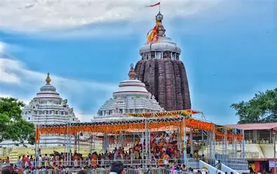
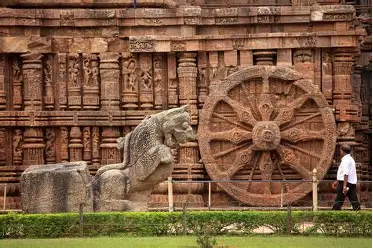
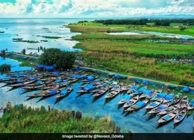
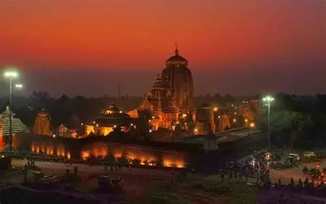
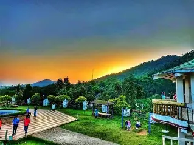
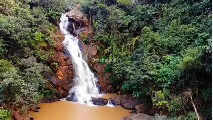
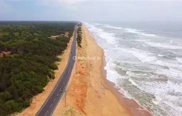
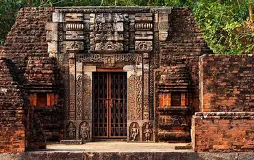
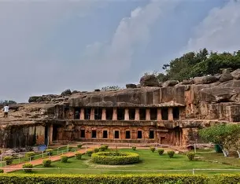

Explore Odisha
- 🏰 Jagannath Temple, Puri  Tour Guide
- 🌞 Konark Sun Temple  Tour Guide
- 🌊 Chilika Lake  Tour Guide
- Lingraj Temple  Tour Guide
- Daringbadi  Tour Guide
- Gulmiwaterfall  Tour Guide
- Chandrabhaga Beach  Tour Guide
- Udayagiri Jajpur  Tour Guide
- Udayagiri and khandagiri  Tour Guide